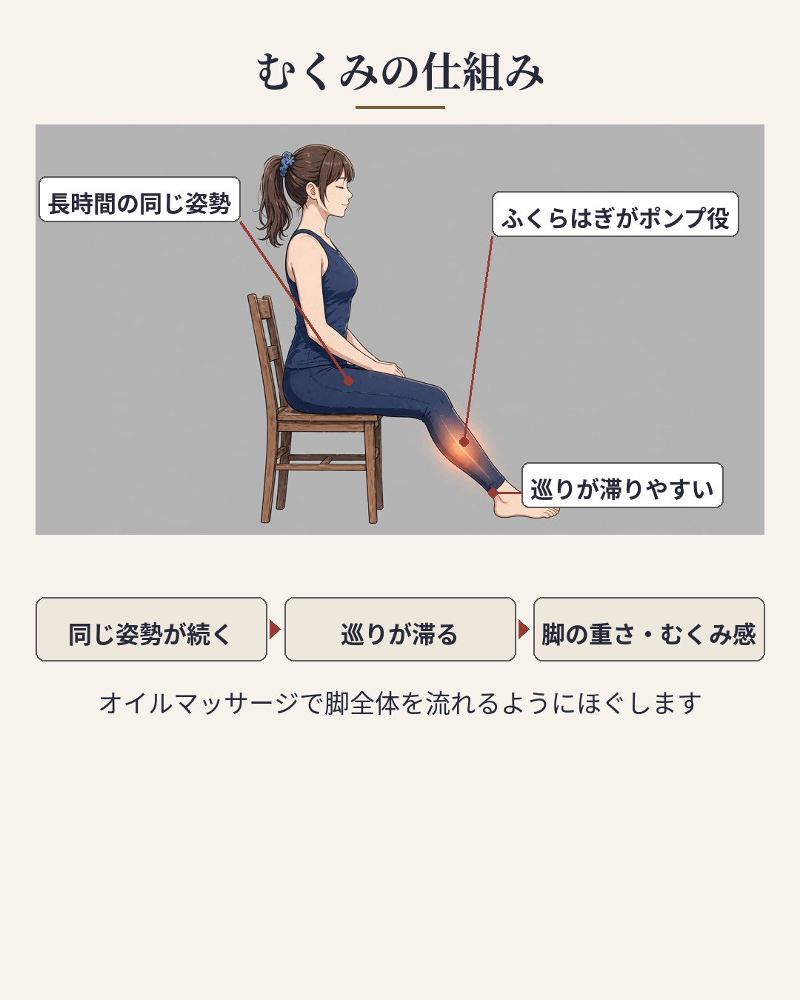

芦屋でクリスマスイルミネーションを見に行った日に気になる顔のむくみ感｜冬の夜の過ごし方とセルフケア、受診の目安

「イルミネーションを見て歩いた日の夜、鏡を見たら顔がいつもより丸く見えた」——12月の芦屋は、街路樹や駅前のイルミネーションが灯り、夕方から夜に出かける機会が増える時期です。寒さのなかで長く歩いたり、帰りが遅くなったりと、ふだんと違う過ごし方が重なりやすい日でもあります。この記事では、イルミネーションを見に行った日に感じやすい顔のむくみ感の一般的な解説、冬の夜の冷えや遅い時間の食事など考えられる要因の整理、イルミネーションの前後と帰宅後に取り入れられるセルフケア、受診の目安をまとめました。
イルミネーションの日に気になる顔のむくみ感とは — 夜の外出の後に表れやすい感覚
顔のむくみ感は、朝起きたときや夕方から夜にかけて、顔全体が重く感じられたり、まぶたや頬のあたりがふくらんでいるように感じられたりする、日常的な感覚を表す言葉です。イルミネーションを見に行く日は、寒い屋外で長く立ち止まったり歩き回ったりと、顔や体が冷えやすい過ごし方が続きます。夜の外出の後に表れやすいとされる感覚には、たとえば次のようなものがあります。
- 帰宅して鏡を見ると、頬やまぶたのあたりがふくらんで見える
- 朝起きたときに、まぶたが重く感じられる
- 夕方から夜にかけて、顔の重さが少しずつ気になってくる
ふだんの日の顔のむくみ感についてはコラム「芦屋で気になる顔のむくみ感｜要因の整理とセルフケア、受診の目安」でもまとめています。この記事では「クリスマスイルミネーションを見に行った日」という冬の夜の場面に絞って見ていきます。
考えられる要因

イルミネーションの日に顔のむくみ感が気になりやすくなる背景は、ひとつとは限らず、いくつかの要因が重なっている場合もあります。ここでは一般的に挙げられるものを整理します。
- 冬の夜の冷え：12月の夜は気温が下がり、イルミネーションを眺めて立ち止まる時間には顔や体が冷えやすくなります。冷えを感じると肩に力が入りやすく、首や肩まわりの緊張が顔の重さとして感じられる場合があります
- 遅い時間の食事と塩分の多い食事：イルミネーションの帰りに外食をしたり、遅い時間に温かいものを食べたりする日は、食事の内容や時間がふだんと変わりやすいこと
- 水分の取り方の偏り：寒い屋外ではのどの渇きを感じにくく、水分をとる量が少なくなりやすい一方、帰宅後に温かい飲み物をまとめて飲むなど、取り方が偏りやすいこと
- 長く歩いた後の疲れ：イルミネーションの会場を歩き回るなど、ふだんより歩く時間が長くなること
- 睡眠時間のずれ：イルミネーションを見に行く日は帰宅が遅くなり、就寝時間が後ろにずれやすいこと。眠る時間が短くなると、翌朝の顔のむくみ感として感じられやすくなります
- 首や肩の緊張：寒さのなかで写真を撮るために上を向いたり、コートの襟を立てて首をすくめたりする姿勢が続くと、首や肩まわりの緊張が顔の重さにつながる場合があります。冬の冷え込みについては、コラム「芦屋でクリスマス・年末の冷え込みに気になる冷え感｜温め方と日常の見直し、受診の目安」もあわせてご覧ください
なかには、腎臓や甲状腺の状態、血圧、服用中の薬、アレルギーなどが背景に関係している場合もあります。急に強く出た場合や、休んでも続く場合は医療機関で確認することが大切です。
セルフケア — イルミネーションの前後と帰宅後に取り入れられる工夫
イルミネーションの日のセルフケアは、出かける前の一工夫と、帰宅後の休ませ方を少し見直すことが中心になります。試しやすいものを挙げます。
- 出かける前に首まわりを温かくする：マフラーやストールで首まわりを覆い、耳まで隠れる帽子を用意します。
- 立ち止まる時間に区切りをつける：イルミネーションを眺めて立ち止まる時間は、ときどき歩いて体を動かす区切りをはさみます。
- 温かい飲み物は少しずつとる：帰宅後にまとめて飲むのではなく、外出の合間にも少しずつ水分をとるようにします。
- 帰宅後は湯船で体を温める：シャワーで済ませず、ぬるめのお湯にゆっくり浸かる日をつくります。のぼせに注意し、無理のない長さで行います。
- 顔まわりのセルフケアを取り入れる：洗顔の後、手のひらで頬を包むようにそっと触れたり、耳のまわりをやさしくなでたりします。強く押したり、こすったりしないようにします。
- 寝る前の首や肩のほぐし：肩をゆっくり回したり、首を左右に軽く倒したりして、その日の首や肩の緊張をほぐす時間をつくります。
- 就寝時間をいつもと大きくずらさない：帰宅が遅くなった日でも、翌日の起きる時間をいつもと大きく変えないようにします。翌朝の出方を記録しておくと、次の外出の備えに役立ちます。
大切なのは、イルミネーションの日の過ごし方を一度に全部変えようとしないことです。マフラーを巻く、合間に歩くといった小さな工夫ひとつから試してみてください。
受診の目安
次のような場合は、医療機関への相談を検討してみてください。
- 顔のむくみ感が急に強く出て、短い時間で進む
- まぶたや唇の腫れをともなう、息苦しさを感じる（この場合は様子を見ず、早めに医療機関へ相談してください）
- 片側だけに強く出る、顔の片側にしびれを感じる
- 発熱や、皮膚の赤み・かゆみをともなう
- 頭痛や吐き気、めまいをともなう
- 数日たっても顔のむくみ感が戻らず、少しずつ強くなっている
- 服用中の薬を始めてから、顔のむくみ感が気になるようになった
こうした症状の背景には、過ごし方の工夫だけでは整理しきれない要因が関係していることもあります。気になる症状が続くときは我慢しすぎず、医療機関で確認しておくと安心です。
ステラベガのご案内 — 冬の夜の外出の後に、静かに休む時間を
ステラベガは、芦屋市内にある女性専用のプライベートサロンです。施術歴30年のセラピストが、オイルマッサージと美容整体を組み合わせた90分コース（10,000円・税込）をご提供しています。営業は月曜〜土曜の17:00〜22:00（日曜休み）、完全予約制で、詳しい住所はご予約確定後にご案内します。完全個室ですので、人目を気にせずゆっくりとお過ごしいただけます。シャワー設備のご利用については、ご利用施設により異なります。
施術ではカウンセリングでその日の体調や顔のむくみ感の感じ方、気になることをうかがい、圧の強さも都度調整します。精油は体調とお好みに合わせてブレンドします。施術後の過ごし方や、ご自宅で続けられるセルフケアについても、施術後にご説明します。なお、近日開院予定のため、ご予約の受付はまだ開始していません。まずはLINE公式アカウントを友だち追加していただくと、開院・受付開始のお知らせをお届けします。料金や営業時間の詳細はトップページでご確認ください。
なお、当サロンの施術はリラクゼーションと美容を目的としたもので、医療行為ではありません。顔のむくみ感に対する効果を保証するものでもありません。気になる症状がある場合は、まず医療機関へご相談ください。